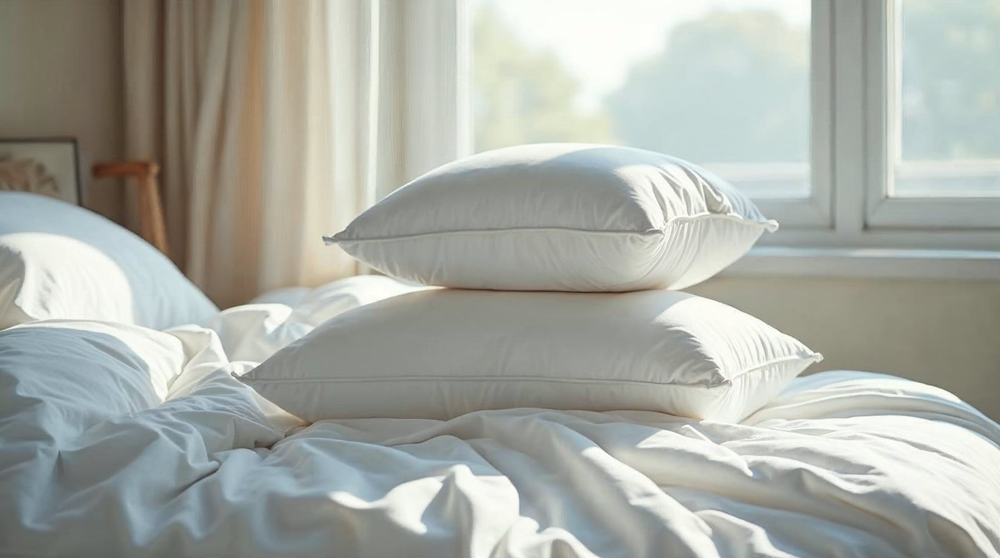
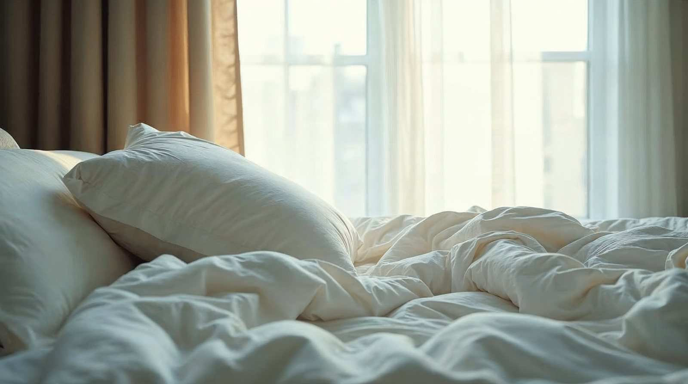
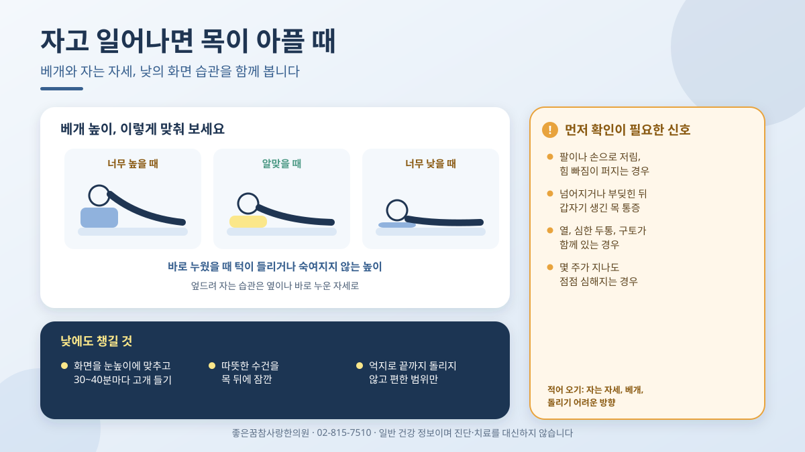

이종호 한의사 감수좋은꿈참사랑한의원 대표원장 (한의사 면허번호 19769)발행 2026-11-22 · 수정 2026-11-26
이 글의 차례
- 잘못 자서 결린 것과 신경이 눌린 것은 다른 얘기예요
- 왜 어떤 날은 유독 목이 더 굳을까요?
- 왜 이런 불편이 생길 수 있나요
- 비슷해 보이는 목 통증은 어떻게 구분하나요?
- 먼저 이렇게 여쭙니다
- 예를 들면 이런 경우입니다
- 스스로 점검해 보세요
- 일상에서 먼저 해 볼 수 있는 것
- 아침에 목이 굳었을 때 그날은 어떻게 지내면 좋을까요?
- 낮의 화면 높이가 아침 목을 만듭니다
- 베개 높이를 맞춰 보는 방법
- 한의원에서 함께 살필 수 있는 경우
- 첫 방문은 이렇게 진행합니다
- 이렇게 기록해 오시면 상담이 쉬워집니다
- 얼마나 지켜보고, 언제 상담하면 좋을까요
- 이런 증상은 먼저 확인이 필요합니다
- 관련 글
자고 일어나 목이 아프다면 베개만 탓하기보다 자는 자세와 낮 동안 목에 쌓인 긴장을 함께 보는 것이 좋습니다. 베개 높이를 조절하고 낮의 화면 높이를 바꾸는 것만으로 아침이 달라지는 경우가 있습니다. 다만 팔로 저림이 퍼지거나 심한 두통이 함께 있다면 먼저 확인이 필요합니다.
진료실에서 이런 말씀 자주 들어요. "원장님, 자고 일어났더니 고개가 안 돌아가요. 베개를 바꿔야 할까요?" 그러면 저는 먼저 "베개도 볼게요, 그런데 어제 하루도 같이 볼게요"라고 말씀드려요. 아침 목은 밤 몇 시간보다 그 전 하루가 더 많이 만드는 경우가 많거든요.
잘못 자서 결린 것과 신경이 눌린 것은 다른 얘기예요
저는 아침 목 통증을 볼 때 이 둘을 먼저 나눠요. 잘못 자서 결린 경우는 목 뒤나 어깨 쪽 근육이 뻣뻣하고 특정 방향으로 돌릴 때 아파요. 대개 며칠 사이 조금씩 풀리는 경우가 많고요.
반면 신경이 눌린 경우는 목보다 팔이나 손으로 저림이 내려가고, 손에 힘이 빠지는 느낌이 들기도 해요. 이건 베개만 바꿔서 지켜볼 일이 아니라 먼저 확인이 필요한 쪽이에요. 저림이 있는지 없는지가 가장 중요한 갈림길이에요.
왜 어떤 날은 유독 목이 더 굳을까요?
같은 베개를 쓰는데 어떤 날은 멀쩡하고 어떤 날은 목이 안 돌아가죠. 그 차이는 대개 그 전날에 있어요. 긴장한 일이 많았던 날, 화면을 오래 본 날, 술을 마시고 깊이 곯아떨어진 날, 피곤해서 소파에서 졸다 잠든 날이 그래요.
술을 마시거나 많이 지친 날은 잠이 들면 자세를 거의 바꾸지 않아요. 평소엔 밤새 여러 번 뒤척이며 목이 알아서 편한 자리를 찾는데, 그게 안 되니 한 자세로 굳어 버리는 거예요. 그래서 저는 아침 목이 아프다고 하시면 전날 밤 이야기를 꼭 여쭤요.
찬 바람도 영향을 줘요. 겨울에 창문 쪽으로 머리를 두고 자거나 선풍기·에어컨 바람을 목에 바로 맞고 자면, 근육이 움츠러든 채로 밤을 보내기 쉬워요. 목을 따뜻하게 덮고 주무시는 것도 작은 방법이에요.
왜 이런 불편이 생길 수 있나요
- 베개가 너무 높거나 낮으면 밤새 목이 한쪽으로 꺾인 채 지내기 쉽습니다.
- 엎드려 자면 고개를 한쪽으로 오래 돌리고 있어 아침에 돌리기 어려울 수 있습니다.
- 낮에 컴퓨터와 휴대전화를 오래 보며 쌓인 목 뒤 긴장이 밤에도 풀리지 않는 경우가 있습니다.
- 소파나 차 안, 책상에 엎드려 잠깐 잔 날에는 목이 제대로 받쳐지지 않아 다음 날까지 불편이 남기도 합니다.
- 찬 바람을 쐬었거나 긴장이 많았던 날 목이 더 굳는다고 느끼는 분도 있습니다.
왜 밤에 쉬었는데 목이 더 아플까요? 머리 무게는 생각보다 꽤 나가요. 수박 한 통쯤을 목이 하루 종일 받치고 있다고 생각하시면 돼요. 낮에 고개를 숙이고 화면을 보면 그 수박이 앞으로 쏠려서 목 뒤 근육이 계속 붙잡고 있어야 하거든요.
그렇게 하루 종일 긴장한 근육이 밤에 제대로 쉬어야 하는데, 베개가 안 맞거나 고개를 한쪽으로 돌린 채 자면 쉬지 못하고 또 버티게 돼요. 그러니 아침에 굳은 채로 깨는 거예요. 베개는 마지막 한 방울일 때가 많아요.
그래서 베개만 바꿔서 해결되지 않는 분들이 많아요. 낮 동안 쌓인 긴장이 그대로라면 어떤 베개를 써도 아침이 비슷하거든요. 저는 그래서 베개와 낮 생활을 같이 봐요.
한의학에서는 목과 어깨가 자주 굳는 분을 볼 때 긴장이 많고 잠이 얕은지, 몸이 쉽게 차가워지는지도 함께 살펴요. 같은 결림이라도 몸 상태에 따라 오래가는 정도가 다르거든요.
비슷해 보이는 목 통증은 어떻게 구분하나요?
- 아침에 한쪽으로 돌리기 어렵고 오후엔 조금 풀린다면, 밤새 근육이 굳은 쪽인 경우가 많아요.
- 고개를 숙이고 화면을 본 날마다 목 뒤가 뻐근하다면, 낮 자세에서 오는 긴장 쪽이에요.
- 목에서 어깨, 팔, 손가락으로 저림이 내려간다면, 목 신경 쪽을 먼저 확인해야 해요.
- 목 뒤가 뻐근하면서 뒷머리까지 조이듯 아프다면, 목과 어깨 긴장에서 오는 두통을 함께 살펴봐요.
이런 구분은 진료실에서 같이 하면 되니까 정확하지 않아도 괜찮아요. 어느 방향으로 돌릴 때, 어디가 아픈지만 기억해 오셔도 충분해요.

먼저 이렇게 여쭙니다
- 주로 어떤 자세로 자고, 베개 높이는 어떤가요?
- 낮에 컴퓨터나 휴대전화를 몇 시간 정도 보나요?
- 어느 쪽으로 돌릴 때 더 아픈가요?
- 팔이나 손이 저리거나 두통이 함께 있나요?
- 아침에만 아픈가요, 낮에도 이어지나요?
예를 들면 이런 경우입니다
- 예를 들어 하루 종일 모니터를 보는 직장인이 퇴근 뒤 침대에서 휴대전화를 보다 잠드는 경우, 낮의 화면 높이와 잠들기 직전 자세를 함께 봅니다. 누워서 화면을 보는 시간을 줄이고 휴대전화는 잠자리 밖에 두는 것부터 권합니다.
- 예를 들어 독서실 책상에 엎드려 잠깐씩 자는 수험생이라면, 고개를 한쪽으로 돌린 채 자는 시간이 목에 부담이 될 수 있습니다. 쉬는 시간에는 엎드리기보다 의자에 등을 기대고 눈을 감거나 잠깐 일어나 걷는 쪽을 권합니다.
- 예를 들어 아이를 재우다 아이 쪽으로 고개를 돌린 채 함께 잠드는 부모라면, 늘 같은 방향으로 고개를 돌리고 자는 날이 이어지지 않았는지 여쭙고 아이와 눕는 자리를 번갈아 바꿔 보도록 권합니다.
- 예를 들어 긴 시간 버스나 비행기에서 고개를 떨군 채 졸고 내린 다음 날 목이 굳은 경우라면, 목이 받쳐지지 않은 채 오래 꺾여 있었던 영향이 커요. 다음엔 목베개를 쓰거나 등받이에 머리를 기대는 자세를 권해요.
- 예를 들어 이사 뒤나 여행지 숙소에서 자고 난 아침마다 목이 아픈 경우라면, 베개 높이가 평소와 달랐을 가능성이 커요. 쓰던 베개 높이를 기억해 두었다가 접은 수건으로 맞춰 보세요.
스스로 점검해 보세요
- 베개를 베고 바로 누웠을 때 턱이 가슴 쪽으로 당겨지거나 뒤로 들린다.
- 옆으로 누웠을 때 머리가 아래쪽 어깨나 위쪽으로 기울어진다.
- 아침에 한쪽으로만 고개를 돌리기 어렵고 오후가 되면 조금 풀린다.
- 화면을 오래 본 날이나 긴장이 많았던 날 다음 아침에 더 심하다.
- 소파, 차 안, 책상에서 졸고 난 다음 날 더 아프다.
- 팔이나 손가락이 저리거나 힘이 빠지는 느낌이 있다.
- 두통이 함께 오고 점점 심해진다.
앞의 다섯 가지는 베개와 자세, 낮 생활을 조정하며 지켜볼 수 있는 단서인 경우가 많습니다. 마지막 두 가지에 해당하면 먼저 진료를 받아 확인해 주세요.
일상에서 먼저 해 볼 수 있는 것
- 바로 누웠을 때 턱이 들리거나 숙여지지 않는 높이로 베개 조절하기
- 엎드려 자는 습관이 있다면 옆이나 바로 누운 자세로 바꿔 보기
- 낮에 화면 높이를 눈높이에 맞추고 30~40분마다 고개 들어 주기
- 따뜻한 수건을 목 뒤에 잠깐 대어 긴장 풀기
- 아플 때 억지로 끝까지 돌리지 않고 편한 범위에서만 천천히 움직이기
이것저것 적었지만 다 하시라는 건 아니에요. 딱 하나만 부탁드린다면, 잠들기 직전 누워서 휴대전화 보는 시간을 줄이는 거예요. 누워서 화면을 보면 목이 꺾인 채로 잠이 들기 쉽고, 그 자세가 밤새 이어지는 경우가 많거든요.
휴대전화는 잠자리 밖, 손이 바로 닿지 않는 곳에 두시면 돼요. 딴 거는 편하게 하셔도 괜찮아요. 이거 하나만 같이 해 주시면 아침이 어떻게 달라지는지 같이 봐요.
아침에 목이 굳었을 때 그날은 어떻게 지내면 좋을까요?
- 억지로 돌려서 풀려고 하지 말고 편한 방향으로만 천천히 움직이기
- 따뜻한 샤워나 따뜻한 수건으로 목 뒤와 어깨를 데우기
- 운전할 때는 고개만 돌리지 말고 몸통째 돌려서 확인하기
- 무거운 가방은 그날만이라도 내려놓거나 양쪽으로 나눠 들기
- 그날 밤엔 베개 높이를 다시 확인하고 조금 일찍 눕기
목이 굳은 날 일부러 꺾어서 소리를 내는 분들이 계세요. 시원한 느낌은 잠깐이고, 굳은 근육을 갑자기 늘리면 오히려 더 붙잡게 되는 경우가 많아요. 최대한 천천히, 아프지 않은 데까지만 움직이시면 돼요.
낮의 화면 높이가 아침 목을 만듭니다
하루 몇 시간씩 화면을 내려다보면 목 뒤 근육은 그만큼 버티고 있어요. 모니터 위쪽이 눈높이쯤 오도록 받침을 두고, 휴대전화는 가슴 높이까지 들어 보는 습관만으로도 목이 덜 지친다는 분이 많아요.
운동하지 말라는 게 아니라, 한 번에 세게 푸는 것보다 자주 약하게 움직이는 게 목엔 훨씬 도움이 돼요. 30~40분마다 고개를 한 번 들고 어깨를 뒤로 천천히 돌려 주세요.
노트북을 오래 쓰신다면 따로 키보드를 두고 화면을 책 몇 권 위에 올리는 것만으로도 고개가 덜 숙여져요.

베개 높이를 맞춰 보는 방법
- 바로 누웠을 때 이마와 턱이 거의 수평이 되고, 목 뒤 오목한 곳이 비지 않게 받쳐지는 높이를 기준으로 삼습니다.
- 옆으로 누울 때는 어깨 높이만큼 머리를 더 받쳐야 해서, 코와 가슴 가운데가 일직선이 되는지 거울이나 가족의 도움으로 확인해 보세요.
- 머리만 베개에 올리지 말고 목 아래까지 베개가 닿게 눕습니다.
- 높이는 접은 수건으로 조금씩 바꾸고, 한 번 바꾸면 사나흘은 써 본 뒤 아침 상태를 비교합니다.
비싼 베개가 꼭 좋은 베개는 아니에요. 내 어깨 너비와 자는 자세에 맞는 높이가 제일 좋은 베개거든요. 바로 눕는 분과 옆으로 눕는 분은 맞는 높이가 다르고, 밤새 둘 다 하는 분은 중간 높이에 양 끝이 조금 높은 쪽이 편하다는 분이 많아요. 바꾼 뒤 아침이 어땠는지만 적어 오시면 같이 맞춰 가면 돼요.
한의원에서 함께 살필 수 있는 경우
- 잠에서 깨면 목이 굳어 돌리기 힘든 경우 베개와 수면 자세를 함께 살핍니다.
- 낮에도 목 뒤가 뻐근한 경우 목 주변 근육의 긴장을 함께 살핍니다.
- 스마트폰을 오래 본 뒤 목이 뻐근한 경우 생활 자세를 함께 살핍니다.
- 한 달에도 몇 번씩 자고 일어나 목이 굳는 일이 되풀이되는 경우 낮의 긴장과 잠의 깊이를 함께 봅니다.
- 목 뻐근함과 함께 뒷머리가 무겁고 잠이 얕은 경우 몸 전체의 긴장과 피로를 함께 여쭙니다.
안 아프다고 끝난 게 아니에요. 며칠 지나 풀렸다고 낮 자세와 잠자리가 그대로라면, 피곤한 주가 오면 또 같은 아침을 맞기 쉽거든요. 자주 반복된다면 한 번 같이 보면 좋아요.
목 때문에 오셨는데 잠과 마음 상태를 여쭤 보면 의아해하시는 분도 있어요. 저는 목만 편하게 하려는 게 아니라 몸 전체를 좋게 하려는 거예요. 잠이 깊어지면 아침 목도 덜 굳는다는 분이 계시거든요.

첫 방문은 이렇게 진행합니다
좋은꿈참사랑한의원의 첫 진료는 대체로 아래 순서로 진행합니다.
- 이야기 듣기: 언제부터, 어떤 자세로 자고 일어났을 때 아팠는지, 베개와 잠자리, 낮에 화면을 보는 시간, 잠의 깊이를 먼저 듣습니다.
- 맥과 혀, 배 살피기: 목 때문에 오셨어도 맥을 먼저 짚고 혀와 배를 살펴 긴장과 피로가 몸에 어떻게 남아 있는지 봅니다.
- 움직임 확인: 고개를 숙이고 젖히고 좌우로 돌리며 어느 방향, 어느 지점에서 아픈지 함께 확인하고 어깨와 날개뼈 주변의 긴장도 살핍니다.
- 필요하면 초음파: 필요하다고 판단될 때 초음파로 목과 어깨 근육의 상태를 살핍니다.
- 방향 정하기: 상태에 맞춰 침·약침·추나 등을 정하고, 귀가 전에는 베개 높이와 낮 자세에서 바꿔 볼 점을 알려 드립니다.
이렇게 기록해 오시면 상담이 쉬워집니다
- 아팠던 날의 자는 자세와 베개(높이, 바꾼 시기)
- 돌리기 어려운 방향과 그 정도
- 전날 화면을 본 시간이나 무리한 일
- 팔 저림·두통이 있었는지, 복용 중인 약
기록은 아침에 눈뜨자마자 휴대전화 메모에 한 줄이면 돼요. "왼쪽 돌리기 힘듦, 어제 소파에서 졸음" 정도로요. 1~2주만 모아도 어떤 날 아침이 더 힘든지가 보이는 경우가 많아요. 편했던 아침도 같이 적어 주시면 더 좋아요.

얼마나 지켜보고, 언제 상담하면 좋을까요
- 잠을 잘못 자서 생긴 목 결림은 며칠 사이 조금씩 풀리는 경우가 많습니다. 베개 높이와 자는 자세를 바꾼 뒤 1주쯤 아침 상태를 적어 보세요.
- 1~2주가 지나도 돌리기 어려운 정도가 그대로이거나, 같은 일이 한 달에 몇 번씩 되풀이된다면 상담을 받아 보세요.
- 아래 신호가 하나라도 있으면 지켜보지 말고 먼저 진료로 확인합니다.
이런 증상은 먼저 확인이 필요합니다
- 팔이나 손으로 저림, 힘 빠짐이 퍼지는 경우
- 넘어지거나 부딪힌 뒤 갑자기 생긴 목 통증
이런 신호가 있으면 한의원보다 가까운 병원이나 응급실을 먼저 찾으세요.
관련 글
- 아침에 일어나면 허리가 뻣뻣한 것은 왜 그런가요?
- 목에서 팔로 저림이 내려올 때(목디스크 의심)는 어떤 점을 먼저 확인하나요?
- 거북목과 라운드숄더는 집에서 어떤 스트레칭을 해 볼 수 있나요?

여쭙는 것
- 주로 어떤 자세로 자고, 베개 높이는 어떤가요?
- 낮에 컴퓨터나 휴대전화를 몇 시간 정도 보나요?
- 어느 쪽으로 돌릴 때 더 아픈가요?
생활에서 해 볼 것
- 바로 누웠을 때 턱이 들리거나 숙여지지 않는 높이로 베개 조절하기
- 엎드려 자는 습관이 있다면 옆이나 바로 누운 자세로 바꿔 보기
- 낮에 화면 높이를 눈높이에 맞추고 30~40분마다 고개 들어 주기
한의원에서 함께 살필 것
- 잠에서 깨면 목이 굳어 돌리기 힘든 경우 베개와 수면 자세를 함께 살핍니다.
- 낮에도 목 뒤가 뻐근한 경우 목 주변 근육의 긴장을 함께 살핍니다.
- 스마트폰을 오래 본 뒤 목이 뻐근한 경우 생활 자세를 함께 살핍니다.
먼저 확인이 필요한 신호
- 팔이나 손으로 저림, 힘 빠짐이 퍼지는 경우
- 넘어지거나 부딪힌 뒤 갑자기 생긴 목 통증
한눈에 보는 표
| 구분 | 핵심 |
|---|---|
| 여쭙는 것 | 주로 어떤 자세로 자고, 베개 높이는 어떤가요? 낮에 컴퓨터나 휴대전화를 몇 시간 정도 보나요? |
| 생활에서 해 볼 것 | 바로 누웠을 때 턱이 들리거나 숙여지지 않는 높이로 베개 조절하기 엎드려 자는 습관이 있다면 옆이나 바로 누운 자세로 바꿔 보기 |
| 한의원에서 함께 살필 것 | 잠에서 깨면 목이 굳어 돌리기 힘든 경우 베개와 수면 자세를 함께 살핍니다. 낮에도 목 뒤가 뻐근한 경우 목 주변 근육의 긴장을 함께 살핍니다. |
| 먼저 확인이 필요한 신호 | 팔이나 손으로 저림, 힘 빠짐이 퍼지는 경우 넘어지거나 부딪힌 뒤 갑자기 생긴 목 통증 |
자주 묻는 질문
베개를 바꾸면 해결되나요?
베개가 한 가지 요인일 수 있지만 낮의 자세와 긴장도 함께 살펴야 해서 생활 전체를 묻고 확인합니다.
목을 돌려 우두둑 소리를 내도 되나요?
반복해서 억지로 꺾는 것은 권하지 않습니다. 통증이 있으면 진료로 상태를 먼저 확인하세요.
한의원에서는 어떻게 살피나요?
통증이 생기는 동작과 자세, 근육의 긴장 정도를 보고 생활 습관과 함께 살핍니다.
찜질은 따뜻하게 하나요, 차갑게 하나요?
굳고 뻐근한 느낌이면 따뜻하게 하는 편이 일반적입니다. 부딪힌 뒤 붓고 열감이 있으면 차갑게 하고 먼저 확인을 받으세요.
새 베개를 사야 할까요?
사기 전에 지금 베개에 접은 수건을 더하거나 빼며 위의 방법으로 높이를 먼저 맞춰 보세요. 그래도 아침마다 불편하면 진료 때 자는 자세와 함께 상의해 주세요.
좋은꿈참사랑한의원은 재진 때 지난번 이야기부터 이어서 여쭙니다. 진료시간과 예약은 오시는 길에서 확인하세요.
어디서 상담받을 수 있나요?
좋은꿈참사랑한의원은 서울 동작구 만양로2길 2 신성빌딩 3층·5층(서울 동작구 상도동, 7호선 상도역 3번 출구 근처)에 있습니다. 한의사 3명(이종호 대표원장, 조영기 수석진료원장, 정원영 진료원장)이 진료합니다. 진료시간은 평일 09:30~20:00(점심 13:00~14:00), 토·일·공휴일 09:30~15:00이며, 방문 전 전화로 확인을 권합니다. 예약은 네이버 예약, 카카오톡 상담, 전화 02-815-7510로 받습니다.
이 글은 일반적인 건강 정보이며 개인의 진단이나 치료를 대신하지 않습니다. 증상이 있거나 복용 중인 약이 있다면 진료를 통해 확인하세요. 치료 효과는 개인마다 다를 수 있습니다.
작성 기준: 일반적으로 알려져 있는 건강 정보를 참고해 정리했습니다(대표원장 감수). 증상 기록은 1~2주 동안 하루 1회, 비슷한 시간에 적어 오시면 지난 상태와 비교하기 쉽습니다.